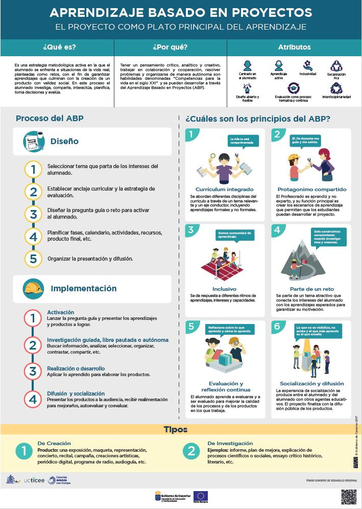

Texto
📚 Guía didáctica.
🌍 Título del proyecto
Construyendo un mundo sostenible: soluciones locales para problemas globales
🎯 Etapa y nivel educativo
📘 Educación Secundaria Obligatoria (ESO)
👩🏫 3º ESO
⏳ Temporalización
El proyecto se desarrollará durante:
📅 6 semanas
📚 12-15 sesiones aproximadamente.
🧠 Metodología
La propuesta se basa en:
✅ Aprendizaje Basado en Proyectos (ABP)
✅ Trabajo cooperativo
✅ Aprendizaje competencial
✅ Uso responsable de las tecnologías digitales
✅ Evaluación formativa y continua
🌱 Objetivos didácticos
✅ Concienciar sobre sostenibilidad y medio ambiente.
✅ Fomentar el pensamiento crítico.
✅ Desarrollar la competencia digital.
✅ Potenciar el trabajo cooperativo.
✅ Elaborar propuestas sostenibles para el entorno cercano.
📚 Competencias clave
🌍 Competencia ciudadana
💻 Competencia digital
🗣️ Comunicación lingüística
🧪 Competencia STEM
🧠 Aprender a aprender
🤝 Competencia personal y social
📋 Criterios de evaluación
El alumnado será evaluado mediante:
✅ rúbricas,
✅ cuestionarios digitales,
✅ observación directa,
✅ autoevaluación,
✅ y coevaluación.
Se valorará:
creatividad,
investigación,
competencia digital,
trabajo cooperativo,
y calidad del producto final.
♻️ Atención a la diversidad y DUA
El proyecto incorpora:
✅ apoyos visuales,
✅ flexibilidad metodológica,
✅ trabajo cooperativo,
✅ diversidad de formatos,
✅ y diferentes formas de participación y expresión.
Se aplicarán principios DUA para favorecer una educación inclusiva y accesible.
💻 Herramientas digitales
Canva
Genially
Padlet
Google Drive
Google Forms
Kahoot
🌍 Producto final
El alumnado elaborará:
✅ campañas de sensibilización,
✅ infografías digitales,
✅ presentaciones interactivas,
✅ y portfolios digitales colaborativos.
🔐 Ciudadanía digital
Se fomentará:
✅ el uso responsable de las tecnologías,
✅ la protección de datos personales,
✅ la privacidad digital,
✅ y la identidad digital segura.
